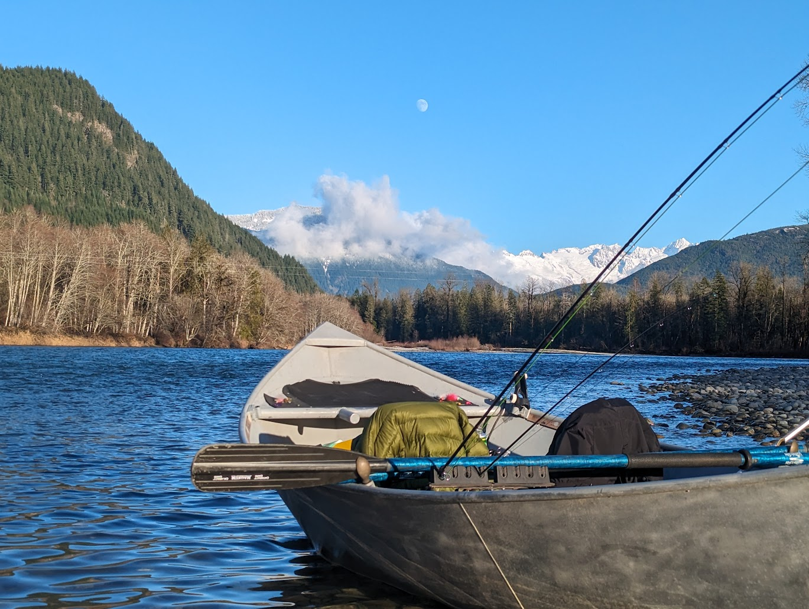

Tours
Every float on the Skagit and Nooksack is different — different light, different wildlife, different water. Here's what we offer, and what to expect when you come out with us.
General Info
Currently, Jon operates a Wooldridge aluminum three-seat drift boat. This watercraft accommodates himself as the rower and two guests. The option to bring one well-behaved, water-savvy dog (with their own provided PFD) is encouraged.
Riders are encouraged to carpool, as two vehicles will be needed to portage: one passenger vehicle left at the takeout, and Jon's truck/trailer combo to drop the boat at the put-in. *Situationally, accommodations may be requested for passenger pickup, Uber, and more depending on float location, time of a day / year, day of week, etc.
All trips are motorless, meaning no gas/fumes/noise outside of occasional road traffic (or, depending on time of year, other motorized boats on the water).
Locations
Most floats are geared to be three to four hours in length depending on CFS (cubic feet per second), or river speed. Options for floats are as follows:
Skagit River:
Marblemount (launch) to Rockport (Howard Miller Steelhead Park)
Rockport (Howard Miller Steelhead Park area) to Concrete (Baker River launch)
Concrete (Baker River launch) to Birdsview
Birdsview to Hamilton
Riverfront Park (launch) to Edgewater (launch)
Nooksack River:
I-9 bridge / Valley Hwy launch to Nugent's Corner River Access (launch)
Nooksack River Access (Guide Meridian launch) to Hovander Park (launch)
Recommended Gear
Minimum gear requirements to have a fun float are as follows:
- Waterproof footwear: rain or muck boots in winter, strapped sandals or crocs in summer
- PNW qualified rain gear (tops and bottoms)
- Layers for warm and/or cold weather
- Sunglasses (polarized recommended)
- Sun protection (hat, sleeves, sunscreen)
- Personal medications
Provided during tours:
- Binoculars
- Cooler
- Fishing equipment (various rods/reels, etc)
- Instructional / informational handouts
- Dry bags for waterproofing supplies
- Personal floatation devices